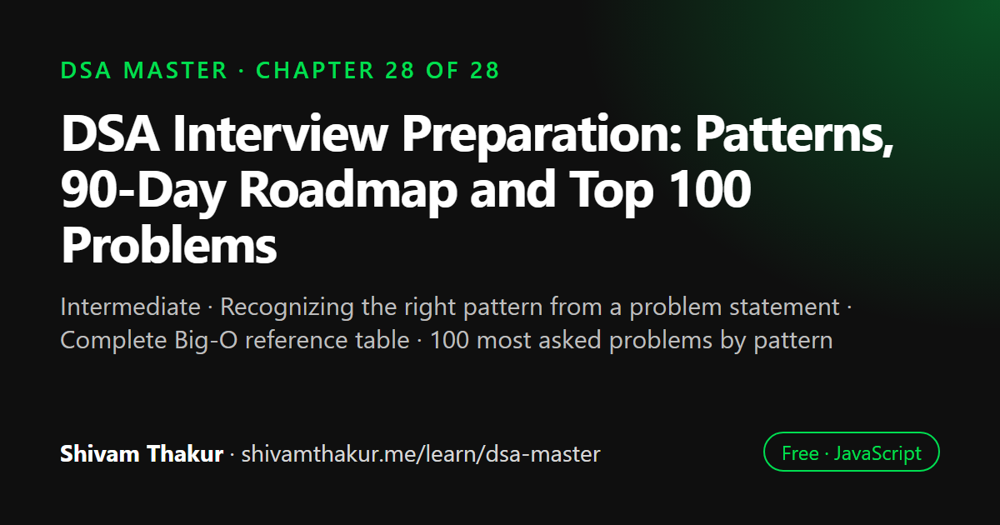

Chapter 28 of 28 · Intermediate
DSA Interview Preparation: Patterns, 90-Day Roadmap and Top 100 Problems
The Final Interview Prep Mega-Appendix

This chapter is the revision index for the whole DSA Master series. It maps problem statements to the right technique, collects every complexity in one reference table, lists the 100 most asked interview problems organized by pattern, and gives a pattern decision tree, 90-day and 180-day study plans, a mock interview protocol and a complete glossary.
In this chapter you will learn
- Recognizing the right pattern from a problem statement
- Complete Big-O reference table
- 100 most asked problems by pattern
- 90-day and 180-day DSA study plans
- Mock interview protocol
28.0 How to Use This Chapter
This closing chapter is not a new topic — it is the organizing index for everything the previous twenty-seven chapters built. Use it the way you'd use a well-designed reference manual: to plan your remaining study time, to diagnose which pattern a new problem belongs to, and to rehearse the vocabulary that lets you communicate cleanly under interview pressure. Every technique named here was built in full, with worked examples and proofs, somewhere earlier in this book — this chapter points back, it doesn't reintroduce.
28.1 The Pattern Recognition Guide: From Problem Statement to Technique
This is the single most valuable table in this book for the moment you're staring at a new, unfamiliar problem. Read the signal phrase, land on the pattern, and go execute the technique you already built in the referenced chapter.
| Signal Phrase in the Problem | Pattern | Chapter |
|---|---|---|
| "Sorted array, find a pair/triplet summing to X" | Two Pointers | 3 |
| "Contiguous subarray/substring satisfying a condition" | Sliding Window | 3 |
| "Range sum queries on a static array" | Prefix Sums | 3 |
| "Many range updates, read final result once" | Difference Array | 3 |
| "Count occurrences / group by / pair lookup" | Hashing (Map/Set) | 4 |
| "Reverse / detect a cycle / find the middle of a list" | Linked List techniques | 5, 7 |
| "Matching / nesting / undo the last operation" | Stack | 6 |
| "Process in arrival order / BFS" | Queue | 6 |
| "Detect a cycle without extra memory / find the middle in one pass" | Fast & Slow Pointers | 7 |
| "Tree traversal, sorted BST output, subtree computation" | Tree recursion (DFS/BFS) | 8 |
| "Always know the current min/max cheaply, Top-K, median of a stream" | Heap | 9 |
| "Autocomplete / prefix search / dictionary lookup" | Trie | 10 |
| "Grid/graph connectivity, shortest path (unweighted)" | BFS/DFS | 11 |
| "Shortest path, weighted edges" | Dijkstra / Bellman-Ford / Floyd-Warshall | 12 |
| "Dependency ordering / prerequisite scheduling" | Topological Sort | 13 |
| "Cheapest way to connect everything" | MST (Kruskal's/Prim's) | 13 |
| "Are these connected? (repeated, incremental queries)" | Union-Find | 14 |
| "Sort with a specific complexity/stability/space guarantee" | Sorting family | 15 |
| "Sorted array or monotonic answer space, find a boundary/optimum" | Binary Search (incl. on the answer) | 16 |
| "Generate all subsets/permutations/combinations, N-Queens, Sudoku" | Backtracking | 17 |
| "Optimize a value with overlapping recursive sub-problems, 1D state" | 1D Dynamic Programming | 18 |
| "Two strings/sequences, or a resource-constrained selection, 2D state" | 2D Dynamic Programming | 19 |
| "Locally optimal choice, provably safe to commit to" | Greedy | 20 |
| "Next/previous greater or smaller element, sliding window max/min" | Monotonic Stack/Queue | 21 |
| "Find all occurrences of a pattern in text" | KMP / Rabin-Karp | 22 |
| "Range query AND range update, both needed, dynamically" | Segment Tree / Fenwick Tree | 23 |
| "Small fixed set of items (n≤~25), track which subset is used" | Bitmask DP | 24 |
| "GCD/LCM, primality, huge numbers modulo a prime, counting arrangements" | Number Theory / Combinatorics | 25 |
| "Maximum flow / bipartite matching / bottleneck capacity" | Network Flow | 26 |
28.2 The Complete Complexity Reference Table
| Structure/Algorithm | Time (typical) | Space | Chapter |
|---|---|---|---|
| Array access / push / pop | O(1) | — | 3 |
| Array shift/unshift/splice(middle) | O(n) | — | 3 |
| Hash Map/Set (get/set/has) | O(1) avg, O(n) worst | O(n) | 4 |
| Linked List insert/delete (at position) | O(1) | — | 5 |
| Stack/Queue push/pop/enqueue/dequeue | O(1) | — | 6 |
| Binary Tree traversal | O(n) | O(h) | 8 |
| BST search/insert/delete | O(log n) balanced / O(n) worst | O(h) | 8 |
| Heap insert/extract/peek | O(log n) / O(log n) / O(1) | O(n) | 9 |
| Heapify (build from array) | O(n) | O(n) | 9 |
| Trie insert/search/startsWith | O(k) | O(total chars) | 10 |
| BFS/DFS (graph) | O(V+E) | O(V) | 11 |
| Dijkstra (heap-based) | O((V+E) log V) | O(V) | 12 |
| Bellman-Ford | O(V·E) | O(V) | 12 |
| Floyd-Warshall | O(V³) | O(V²) | 12 |
| Kruskal's MST | O(E log E) | O(V+E) | 13 |
| Prim's MST | O(E log V) | O(V+E) | 13 |
| Union-Find (rank + path compression) | O(α(n)) amortized | O(n) | 14 |
| Merge Sort | O(n log n) all cases | O(n) | 15 |
| Quick Sort | O(n log n) avg, O(n²) worst | O(log n) | 15 |
| Heap Sort | O(n log n) all cases | O(1) | 15 |
| Counting/Radix Sort | O(n+k) / O(d(n+k)) | O(n+k) | 15 |
| Binary Search | O(log n) | O(1) | 16 |
| Backtracking (subsets/permutations) | O(2ⁿ) / O(n·n!) | O(n) | 17 |
| 1D/2D Dynamic Programming | Problem-dependent, typically O(n) to O(n²) | O(n) to O(n²), often reducible | 18, 19 |
| Greedy (Activity Selection, etc.) | O(n log n) (sorting dominated) | O(1)-O(n) | 20 |
| Monotonic Stack/Queue | O(n) | O(n) | 21 |
| KMP | O(n+m) | O(m) | 22 |
| Rabin-Karp | O(n+m) avg, O(n·m) worst | O(1) | 22 |
| Segment Tree query/update | O(log n) | O(n) | 23 |
| Fenwick Tree update/query | O(log n) | O(n) | 23 |
| Sieve of Eratosthenes | O(n log log n) | O(n) | 25 |
| Max Flow (Edmonds-Karp) | O(V·E²) | O(V²) | 26 |
28.3 The 100 Most Asked Interview Problems, Organized by Pattern
Rather than an unordered list, these are grouped by the technique this book built, so you can drill an entire pattern in one sitting.
Arrays & Strings / Two Pointers / Sliding Window (Ch. 3): Two Sum (sorted), Container With Most Water, 3Sum, Longest Substring Without Repeating Characters, Minimum Window Substring, Product of Array Except Self, Trapping Rain Water, Longest Substring with At Most K Distinct Characters, Valid Palindrome, Remove Duplicates from Sorted Array, Move Zeroes, Merge Sorted Array, Subarray Sum Equals K, Maximum Subarray (Kadane's), Sliding Window Maximum (also Ch. 21).
Hashing (Ch. 4): Two Sum (unsorted), Group Anagrams, Longest Consecutive Sequence, Valid Anagram, Contains Duplicate, Top K Frequent Elements (also Ch. 9), Subarray Sum Equals K (also above), First Missing Positive, LRU Cache (also Ch. 5, 27).
Linked Lists / Fast & Slow Pointers (Ch. 5, 7): Reverse Linked List, Merge Two Sorted Lists, Linked List Cycle (I and II), Middle of the Linked List, Remove Nth Node From End, Palindrome Linked List, Add Two Numbers, Reorder List, Copy List with Random Pointer, LRU Cache.
Stacks & Queues (Ch. 6): Valid Parentheses, Min Stack, Evaluate Reverse Polish Notation, Implement Queue using Stacks, Daily Temperatures (also Ch. 21), Largest Rectangle in Histogram (also Ch. 21).
Trees (Ch. 8): Maximum Depth of Binary Tree, Validate Binary Search Tree, Binary Tree Level Order Traversal, Symmetric Tree, Lowest Common Ancestor of a BST, Binary Tree Maximum Path Sum, Serialize and Deserialize Binary Tree, Construct Binary Tree from Preorder and Inorder, Diameter of Binary Tree, Invert Binary Tree.
Heaps (Ch. 9): Kth Largest Element in an Array, Top K Frequent Elements, Find Median from Data Stream, Merge k Sorted Lists, Task Scheduler.
Tries (Ch. 10): Implement Trie, Word Search II, Design Add and Search Words Data Structure, Replace Words.
Graphs (Ch. 11-14, 26): Number of Islands, Clone Graph, Course Schedule (I and II), Pacific Atlantic Water Flow, Network Delay Time, Cheapest Flights Within K Stops, Redundant Connection, Number of Connected Components, Word Ladder, Rotting Oranges.
Sorting & Binary Search (Ch. 15-16): Merge Intervals (also Ch. 20), Search in Rotated Sorted Array, Find Minimum in Rotated Sorted Array, Kth Largest Element, Koko Eating Bananas, Capacity To Ship Packages Within D Days, Median of Two Sorted Arrays, Search a 2D Matrix.
Backtracking (Ch. 17): Subsets, Permutations, Combination Sum, N-Queens, Word Search, Generate Parentheses, Palindrome Partitioning, Letter Combinations of a Phone Number.
Dynamic Programming (Ch. 18-19): Climbing Stairs, House Robber (I and II), Coin Change, Longest Increasing Subsequence, Longest Common Subsequence, Edit Distance, 0/1 Knapsack, Unique Paths, Word Break, Maximum Product Subarray, Decode Ways, Partition Equal Subset Sum, Best Time to Buy and Sell Stock (I-IV).
Greedy (Ch. 20): Jump Game (I and II), Gas Station, Merge Intervals, Non-overlapping Intervals, Meeting Rooms II.
Monotonic Stack/Queue (Ch. 21): Next Greater Element (I and II), Daily Temperatures, Largest Rectangle in Histogram, Sliding Window Maximum, Trapping Rain Water.
Strings (Ch. 22): Implement strStr() (KMP), Longest Palindromic Substring, Group Anagrams, Valid Anagram, Longest Repeating Character Replacement.
Bit Manipulation (Ch. 24): Single Number (I, II, III), Number of 1 Bits, Counting Bits, Reverse Bits, Sum of Two Integers.
28.4 Pattern Recognition Decision Tree (ASCII)
START: What does the problem ask?
|
+----------------------------+----------------------------+
| | |
"Find/count something "Arrange/generate "Optimize a value
in a linear structure" all X" (min/max/count ways)"
| | |
Sorted? -> Two Pointers / Fixed order matters? Overlapping sub-
Binary Search (Ch.3,16) -> Permutations (Ch.17) problems? -> DP (Ch.18-19)
Contiguous range? -> Order doesn't matter? |
Sliding Window (Ch.3) -> Combinations (Ch.17) Greedy-choice property
Need O(1) lookup/pair? -> Constraint-based placement? PROVABLE? -> Greedy (Ch.20)
Hashing (Ch.4) -> Backtracking w/ pruning |
(N-Queens, Sudoku, Ch.17) Small fixed n, need
subset tracking? ->
Bitmask DP (Ch.24)
|
"Structure is a
tree/graph/grid"
|
Hierarchical, need order? -> Tree traversal (Ch.8)
Need shortest path, unweighted? -> BFS (Ch.11)
Need shortest path, weighted? -> Dijkstra/Bellman-Ford (Ch.12)
Need to connect everything cheaply? -> MST (Ch.13)
Need "are these connected" repeatedly? -> Union-Find (Ch.14)
Grid with adjacency movement? -> Implicit graph, BFS/DFS (Ch.11)
Need next/prev greater element? -> Monotonic Stack (Ch.21)
Need range query+update together? -> Segment/Fenwick Tree (Ch.23)28.5 The 90-Day DSA Study Plan
Days 1-15 (Foundations): Chapters 1-7 — Big-O, Recursion, Arrays/Strings, Hashing, Linked Lists, Stacks/Queues, Fast & Slow Pointers. Goal: automatic fluency with complexity analysis and the core linear structures.
Days 16-30 (Hierarchical Structures): Chapters 8-10 — Trees, Heaps, Tries. Drill traversal orders and BST operations until they're reflexive.
Days 31-45 (Graphs): Chapters 11-14 — Graph fundamentals, Shortest Paths, Topological Sort/MST, Union-Find. This is the densest conceptual cluster in the book; budget real time here.
Days 46-55 (Sorting & Searching): Chapters 15-16 — Sorting Masterclass, Binary Search Patterns. Memorize the complexity table cold.
Days 56-70 (The Big Three Advanced Patterns): Chapters 17-20 — Backtracking, Dynamic Programming (both parts), Greedy. This is traditionally the hardest stretch for most learners — the daily project suggestions in each chapter are worth doing, not skipping.
Days 71-80 (Specialized Techniques): Chapters 21-24 — Monotonic Stack/Queue, String Algorithms, Segment/Fenwick Trees, Bit Manipulation.
Days 81-90 (Rounding Out and Review): Chapters 25-27, plus full review of this appendix. Take timed mock interviews (Section 28.7) during this final stretch.
28.6 The 180-Day DSA Plan
Simply double every phase above, and add: a full re-read of every chapter's "Common Mistakes" and "Interview Tips" callouts in week-long batches (roughly 4 chapters per week), a personal "mistakes journal" logging every bug pattern you hit while solving the coding problems, and a second full pass through Chapters 17-19 (Backtracking and DP) specifically, since these consistently take the general population of learners the longest to internalize. Add Chapter 26 and Chapter 27 as optional "depth" reading in the final 30 days if targeting companies known for advanced-topic interviews.
28.7 The 300 Coding Problems Roadmap
Distribute practice across difficulty and pattern using this allocation, avoiding the common mistake of over-practicing one comfortable pattern (usually arrays/hashing) while under-practicing a weaker one (usually DP or graphs):
- 60 Easy problems: 5 per pattern family (Arrays/Strings, Hashing, Linked Lists, Stacks/Queues, Trees, Heaps, Graphs, Sorting/Search, Backtracking, DP, Greedy, Monotonic Stack).
- 150 Medium problems: 12-13 per pattern family, the bulk of real interview difficulty.
- 90 Hard problems: concentrated specifically in DP (20), Graphs (15), Backtracking (15), Monotonic Stack/String Algorithms (15), and a mixed 25 covering Segment Trees, Bitmask DP, Network Flow, and Math — the genuinely advanced material.
28.8 Company-Wise Question Tendencies (General Patterns, Not Guarantees)
Google: Strong emphasis on graph algorithms, DP, and system design connections (Ch. 27); expect "why" follow-ups on every complexity claim.
Amazon: Practical, business-framed problems (often literally an inventory/logistics/delivery scenario) built on arrays, trees, and graphs; leadership-principle-style behavioral questions alongside DSA.
Meta: Heavy on trees/graphs and array manipulation, often under tighter time pressure; strong emphasis on clean, bug-free code on the first attempt.
Microsoft: Balanced across all patterns, with a notable emphasis on object-oriented design combined with DSA (e.g., "design a parking lot" style problems layered on top of core algorithms).
Apple: Often emphasizes correctness and edge-case handling over cleverness; strong focus on strings and arrays.
Netflix: Fewer pure whiteboard algorithm rounds; more system-design-and-DSA-hybrid discussions, directly reflecting Chapter 27's material.
Uber: Graph-heavy (routing, matching — directly Chapters 11-14, 26), reflecting the company's core logistics domain.
Adobe: Balanced, with attention to string algorithms and recursion (Chapters 2, 22).
A Necessary Caveat
These are loose, historically-observed tendencies, not guarantees — interview formats and question banks change constantly. The correct preparation strategy is always comprehensive coverage of this entire book, not narrowly targeting a single company's rumored question list.
28.9 Mock Interview Protocol
Run every practice problem through this exact sequence, out loud, every time — the discipline matters more than any single problem:
- Restate the problem in your own words; confirm input/output format and constraints (size limits, value ranges, edge cases like empty input).
- State a brute-force solution and its complexity, even if you already see the optimal one — this establishes a baseline and shows your reasoning process.
- Identify the pattern (use Section 28.1/28.4's tables as a mental checklist) and explain, out loud, why it applies — not just that it does.
- Code the solution, narrating your reasoning as you write, especially around edge cases (empty input, single element, duplicates — the checklist every chapter in this book has ended with).
- State the final time and space complexity, unprompted, with justification.
- Test it mentally against at least one edge case before declaring it done.
28.10 Complete Glossary
Algorithm: A finite, well-defined, correct sequence of steps solving a class of problems (Ch. 1). Amortized Analysis: Averaging cost across a sequence of operations on the same structure, where occasional expensive operations are offset by many cheap ones (Ch. 3, 4, 6, 14). Backtracking: Recursive search that abandons a partial candidate the moment it can't lead to a valid solution (Ch. 17). Big-O Notation: Describes an algorithm's worst-case growth rate as input size approaches infinity, ignoring constants and lower-order terms (Ch. 1). Binary Search: Halving a sorted (or monotonic) search space each step to locate a target or optimal value in O(log n) (Ch. 1, 16). Bipartite Graph: A graph whose vertices split into two groups with edges only between groups, never within (Ch. 26). Bitmask: An integer used to represent a small set, where each bit flags one item's membership (Ch. 24). BFS (Breadth-First Search): Queue-driven, layer-by-layer graph traversal; guarantees shortest path in unweighted graphs (Ch. 6, 11). DFS (Depth-First Search): Stack/recursion-driven graph traversal that explores as deep as possible before backtracking (Ch. 6, 8, 11). Divide and Conquer: Splitting a problem into disjoint sub-problems, solving each, and combining results (Ch. 15, contrasted with DP in Ch. 18). Dynamic Programming: Solving overlapping sub-problems once each, caching results, built on optimal substructure (Ch. 2, 18, 19). Grundy Number: A value characterizing an impartial game position's equivalence to a Nim pile (Ch. 25). Hash Collision: Two distinct keys mapping to the same bucket; mathematically inevitable by the pigeonhole principle (Ch. 4). Heap: A complete tree maintaining a parent-child (not full) ordering, giving O(1) min/max access (Ch. 9). Load Factor: The ratio of entries to buckets in a hash table, triggering resize when too high (Ch. 4). Memoization: Caching a function's results by its arguments to avoid redundant recomputation (Ch. 2, 18). Min Cut / Max Flow: The provably equal minimum bottleneck capacity and maximum achievable flow in a network (Ch. 26). Monotonic Stack/Queue: A stack or deque maintained in strictly increasing/decreasing order to solve next-greater-element-shaped problems in O(n) (Ch. 21). Optimal Substructure: A problem property where optimal solutions are built from optimal sub-solutions (Ch. 18, 20). Rolling Hash: A hash recomputed in O(1) as a window slides, by removing the outgoing and adding the incoming contribution (Ch. 22). Stable Sort: A sort preserving the relative order of equal elements (Ch. 15). Topological Sort: A linear ordering of a DAG's vertices respecting all dependency edges (Ch. 13). Trie: A tree sharing paths for common string prefixes, enabling fast prefix queries (Ch. 10). Union-Find: A structure tracking disjoint sets with near-O(1) amortized union/find via rank and path compression (Ch. 14).
28.11 Closing Words
This handbook began with a single claim: the gap between "a program that works" and "a program that works at scale" is Data Structures and Algorithms. Every chapter since has been in service of that one idea — building not a list of memorized recipes, but a genuine, connected mental model where a technique learned in one chapter (a Set in Chapter 4, a heap in Chapter 9, a bit trick in Chapter 24) keeps reappearing, recognizably, in contexts you'd never have connected on first glance. That recognition — "wait, this is the same shape as..." — is the actual skill this book was built to train, more than any single algorithm's implementation.
You now have the complete map. The 100 problems, the study plans, and the pattern tables in this chapter are the index; the real material is behind you, in the twenty-seven chapters you worked through, each one building on the last. Go build something.
— End of the JavaScript Data Structures & Algorithms Handbook —
DSA Interview Prep Roadmap: frequently asked questions
How long does it take to prepare DSA for interviews?
About 90 days at 1 to 2 focused hours a day is enough for most people starting from the basics. If you have less time each day, the 180-day plan in this chapter spreads the same material more gently.
How do I recognize which pattern a coding problem needs?
Look at the input shape and the question. Sorted input suggests binary search or two pointers; contiguous subarrays suggest sliding window or prefix sums; "all combinations" suggests backtracking; "minimum or maximum number of ways" suggests DP; dependencies suggest topological sort.
How many LeetCode problems should I solve?
Pattern coverage matters more than the count. Solving around 150 to 300 problems spread across every major pattern, and being able to explain why each solution works, prepares you better than 1,000 problems from a few topics.
What should I do in a coding interview when I am stuck?
Talk through a brute-force solution and its complexity first, then look for the repeated work it does. Ask clarifying questions, try small examples by hand, and say which patterns you are considering; interviewers grade your reasoning, not only the final code.